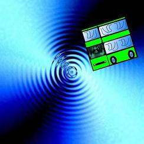
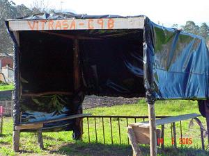
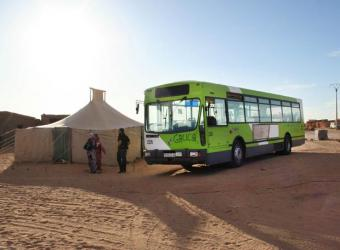

Vitrasa
 De: La Frikipedia, la enciclopedia extremadamente seria.
De: La Frikipedia, la enciclopedia extremadamente seria.
| De la serie empresas malignas:
|
| Vitrasa
|
|
|
| Perteneciente al grupo:
|
No pertenece a ningún grupo, ES el Grupo
|
| Se dedica a:
|
Arrollar todo lo que se mueva (o no)
|
| País de origen:
|
Krypton
|
| Año de fundación:
|
1968
|
| Super Presidente:
|
El Vitrasero Farlopero
|
| Nivel de maldad:
|
87% bAd
|
| Empresas absorbidas:
|
Penitenciaría Provincial de Pontevedra, Hospital Psiquiátrico de Rebullón, entre otras
|
| Número de empleados:
|
Los que salen (o consiguen salir) de los sitios de arriba
|
| Atentados contra la humanidad
|
Agotamiento de las reservas mundiales de biodiésel
|
| ¿Se aconseja trabajar aquí?
|
Para Dominar el Mundo, desde luego
|
| ¿Se recomienda el boicot?
|
No, puede ser MUY peligroso
|
| Cantidad de denuncias:
|
Ninguna. En Vigo, Vitrasa es la LEY
|
| Sitio web:
|
[www.vitrasa.es Página oficial de Vitrasa]
|
Compañía de Transporte pseudopública perteneciente a la mafia local de Vigo (capital vitalicia de Portugal, tras la última festividad de la Reconquista).
Los automóviles utilizados y homónimos, están construidos principalmente con kriptonita (de ahí su característico color verde) y utilizan como combustible biodiésel.
 Vitrasa saltando al Hiperespacio
Las principales líneas son:
- Rianxira 1: Une la plaza de América con un sitio al que los universitarios van a pasar el día (CUVI). Esta linea se caracteriza por tener unos autobuses con gran interés histórico, y en llenarlos hasta que no quede ni un centímetro libre, con la mágica frase "avanzad un POCO hacia atrás". Cuenta la leyenda que una vez subió Todo el Mundo.
- Rianxira 2: Igual que el anterior pero con otro recorrido aún por identificar.
- C1, C2, C3: Con motorizaciones diesel de última generación con FAP o gasolina de hasta 215cv, elevalunas eléctricos, aire acondicionado, airbag de conductor y acompañante, ABS, ESP, navegador, radio con cargador de CD, dos años de garantía, etc. (cumpliendo con las normativas de emisiones mínimas de gases). ¡Ah! Y con descuentos de hasta 4.200 leros.
- 7: La increíble linea de Vitrasa que pasa por todas las paradas de la ciudad. Ya sea el concello, lo profundo del monte de Zamans, Balaídos o El Corte Inglés; allí tienes una parada de C7. Aunque eso si, ver el autobús es más difícil.
- 8: Línea rápida y especializada en bajar a más de 180km/h por las parroquias suburbiales de Vigo, recogiendo un amplio y variopinto elenco de personajes.
- 11: Para los calurosos de Cabral o Lavadores que quieran ir al ayuntamiento (a reclamar,lo mas frecuente) o a la playa (menos frecuente), siempre va vacío, se puede afirmar con rotundidad y no equivocarse de que es un Vitrasa fantasma.
- 12B: Linea que unía Matama y en ocasiones el Freixo con ese lugar tan concurrido llamado Vigo memorial. Ahora, por fastidiar, les quitaron la línea a los de Matamá, en Pereiró da la vuelta.
- 13: Línea de Vitrasa famosa por existir. Todo el mundo que sube a ella recibe una llamada al móvil que le asegura que morirá en 5 días.
- 15C: Bus creado por Vitrasa para que creas que puedes ir al Cuvi desde algun sitio que no sean plaza España y plaza America.Siempre llega tarde y solo pasa cada hora.Si no llegas a clase,han cumplido su objetivo.
- 16: Androide creado por el Dr. Gero con el fin de dominar la tierra. Así que el androide se metió en el lugar donde más posibilidades había de ello; Vitrasa, y se transformó en el autobus que usan los que quieren llevar la contraria. Es el autobús más utilizado por Satanás. Pero fue destruido por Dios y ahora es una línea más que no lleva a ninguna parte.
- 17: El único autobús capaz de pasar por tu lado 238 veces al día y tardar varias semanas cuando lo estás esperando. Famoso por su archiconocido conductor calvo, que se dice que algún día se quitó las gafas de Sol. Este autobús baja hasta los suburbios de Ríos, eso sí, si pillas el 17 que va a Ríos lleva víveres, porque el Vitrasa se parará y quién sabe si algún día arrancará de nuevo. Este bus va a La Guía, pero eso no le importa a nadie.
- 25: Linea que discurre por sitios deshabitados. Normalmente solo la cogen el conductor y la misma señora siempre.
- 28: No se tienen datos reales sobre la existencia de esta Línea.
- Lanzadeira: Linea que va directa a la Luna o al Sol, pero nunca sabes a dónde va hasta que te has subido y no tiene ninguna parada de por medio.
- Futbol: Linea que sale los Sábados o los Domingos y que se camufla cual camaleón en la hierba de Balaidos y atropella a los jugadores del equipo visitante.
- R: Línea de refuerzo que pasa cada 50 años. Misión histórica aún por determinar.
- N1 y N2: Líneas que comunica Txurruka y Samil con el resto del mundo durante las noches viguesas.
- L10 y L12: Lineas que llegan hasta Nigrán pasando por Vao, Samil, Coruxo. Aún teniendo la velocidad de un Ferrari, estos siempre llegan con retraso porque se dedican a bloquear las entradas a Samil y Vao. Estos dos buses son aún mas dificiles de ver que el C7.
- Fora de servizo: Misteriosa línea de la que se desconoce su recorrido, se dice que todo el que sube desaparece en un agujero negro oculto en su interior.
 Como se puede comprobar, la infraestructura de la compañía tiene gran interés histórico
Citas y hechos
- Cuando veas un VITRASA tírate a la cuneta.
- Su principal cometido es estorbar y provocar atascos de cientos de kilometros.
- Para ser conductor de VITRASA, dale brasa, dale brasa (Refranero Popular de San Teleco).
- Un VITRASA tiende por naturaleza a ocupar el máximo número de carriles posible(tre más o menos)
- Los conductores de VITRASA (mundial y originalmente conocidos como "vitraseros") son reclutados en diversas instituciones penales y psiquiátricas de la zona, y están amparados por la ley viguesa, estando por encima de la Guardia Civil y La Policía Local.
- INTENTAR adelantar a un VITRASA (que es imposible) está castigado con 20 años de trabajos forzados en las obras del PXOM, y además, el vitrasero agraviado tiene derecho a empujar a la cuneta al ofensor. Sólo hay dos excepciones: En llano, o cuesta abajo, el único que puede adelantar a un Vitrasa es Chuck Norris. Cuesta arriba, se han dado casos de octogenarias en patinete adelantando al Rianxira 1 o al Rianxira 2 en su viaje hacia el CUVI.
- VITRASA posee la emisora de radio más escuchada de Vigo y alrededores, conocida como "Radio Vitrasa" donde solo se escuchan partidos del real club celtíbero (aunque algunos todavía se empeñan en llamarla Quiss Efeme), que emite cíclicamente las mismas 4 canciones del repertorio de Los Desgraciaus las 24 horas del día , los 369 días del año y los 120 años que tiene un siglo.
- Uno de los mayores enemigos de VITRASA es el colectivo de autoescuelas vigués. Los vitraseros manifiestan su odio con la ya convertida en tradición de bloquear y embestir todo coche de autoescuela que se ponga a tiro. Los vitraseros sienten un odio especial hacia las autoescuelas "(Propiedad)De Luis", "Te La Metemos (Doblada)" y "AAAAH'Se Alquila".
- Sólo VITRASA raya a VITRASA
- A pesar de que los vitraseros son seres malignos y malvados se les atribuye el salvamento de la humanidad de otro ser mas maligno y malvado conocido como THE PESETOR (el Taxista).
- Ni se te ocurra dañar un Vitrasa.(en un intento de tocar los güebos al conductor los gilipollas de turno sufrieron graves palizas).
- Cuando aparece: ERROR EN TARJETA, frótala enérgicamente contra tu cuerpo (partes pudorosas preferentemente) e introducela suavemente de nuevo. Si esto no funciona, la solución reside en las preferencias sexuales del vitrasero
Últimos avistamientos
- Se dice que ha habido avistamientos del C4P, C4GP y del C8, pero no se ha podido verificar su existencia.
- Se rumorea que la linea R ha pasado, no una, si no dos veces en 2007; de modo que se sospecha que en lugar de esperar 50 años, habrá que esperar 100 para su próximo avistamiento.
- Se ha detectado una linea, llama 14, que pasa a las 6 y a las 9 de cada 29 de febrero de cada 25 años aprox.
- ¡¡Las últimas semanas, ha sido visto, en la inmensidad del desierto del Sáhara, un veloz destello verde, un relámpago de kriptonita entre la arena!! Es la nueva línea Vitrasa Cالمستخدمون يكتبون صحفا طويلة جالسون أمام الحاسوبA (AKA Desert Vitrasa).
- Se rumorea que el L10 ha pasado a su hora por Samil.
 La única imagen que se posee de la íncreíble línea Cالمستخدمون يكتبون صحفا طويلة جالسون أمام الحاسوبA
J
Semidios que habita en el cuerpo de un vitrasero, conocedor de todo lo que pasa en EL GRUPO, tiene las respuestas para todo o casi todo, se oculta tras un ordenador para pasar desapercibido durante su estancia en la tierra.
El calvo del Vitrasa
El conductor de Vitrasa conocido como "El calvo", es, sino el que más, uno de los más peligrosos autobuseros que pululan sobre la faz de la tierra, parte del sistema solar, y el hemisferio norte de Kripton. Si algún día sientes que tu vida está en peligro (más de lo normal) cuando te encuentras en el vitrasa, probablemente sea El calvo el que vaya al volante.
- Actualmente, el calvo se encuentra subiendo y bajando de ese paraíso terrenal llamado CUVI. Si vais a coger su bus, no os preocupéis, llegará a tiempo.
- Nadie puede adelantar a un Vitrasa conducido por el calvo. Corre el rumor de que en San Teleco '09 un insensato con un pedo como una catedral lo intentó. Nadie lo ha vuelto a ver.
- El calvo puede viajar en una dimensión espacio-temporal alternativa. Existen casos verídicos de gente que coge su Vitrasa a las 19.40 en el CUVI, y llega a Vigo a las 19.30.
- El calvo ostenta el récord de tiempo en la subida al CUVI. Gracias a su conocimiento de magia negra, puede completar el recorrido Dodecaedro-Industriales en 8 minutos y 57 segundos. Eso sí, sólo lo consigue en días soleados con una humedad relativa del 69%.
- Se dice que el calvo aprobó el examen de conducir autobuses a la segunda. Su examinador era Chuck Norris.
- Se ha confirmado recientemente que el Calvo es un Señor del Tiempo y su Vitrasa una TARDIS, explicación de las anomalías espacio-temporales que se dan en su trayecto.
El de Vilagarcia
Extraño ser residente en Vilagarcia que conduce un vitrasa, capaz de perderse en una rotonda, tumba señales y se salta las paradas a posta para que las mujeres corran detras de el.
Capaz de desencadenar la tercera guerra mundial por un coche estorbando en la parad, de perderse en una rotonda con dos salidas y de ponerse a cantar mientras conduce y provocar una tormenta en pleno agosto.
Este ser, hasta su asesinato, ha sido visto por las lineas 4, 12B, 13, 22, 23 y 31.
No darle de comer despues de las 12 de la noche.
El de Parada Solicitada
Infiltrado del grupo que tiene un blog donde cuenta sus planes para destruir al grupo. Sabe más del grupo que J, y ambos buscan matarse en una guerra fraticida que lleva más de 100 años y en la cual han muerto 6 millones de civiles, se dice que el de Vilagarcía intentó mediar en la batalla, pero no tuvo piedad con él y fue asesinado tras torturarlo obligándole a ir en un Vitrasa cargado de viejas al Salsa Costas. Actualmente se dedica a causar incendios en los autobuses como demostración autobusera de que sabe como matar a J y fingir que fue un accidente
Huelgas Vitrasa
- Son unos hechos que ocurren aproximadamente una vez al año con una duracion aproximada de una semana y que afecta directamente a la población del CUVI, la cual se ve sitiada y se reduce notablemente su población.
Videos de Vitrasa
 Empresas Empresas 
|
Comunicaciones y entretenimiento
|
Autor(es):
- Nexo
- CartDestr
- Ultrapuerco
- Aque
- Daniel
- Ewi
- Antomil
- Antonio92
- WWE
- Veni Vidi Vici
Frikipedia 2005-2016, Licencia
GFDL 1.2 - Extraído por FrikiLeaks